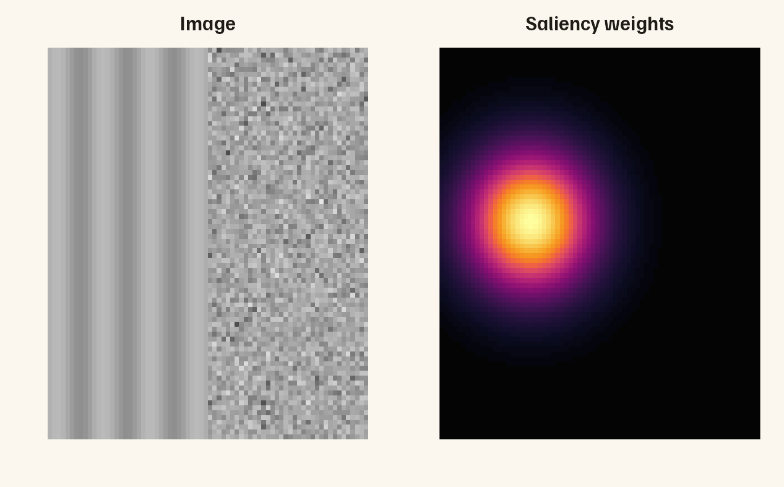
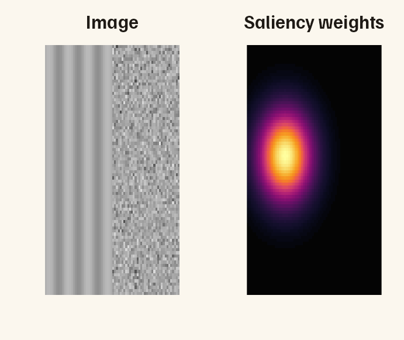
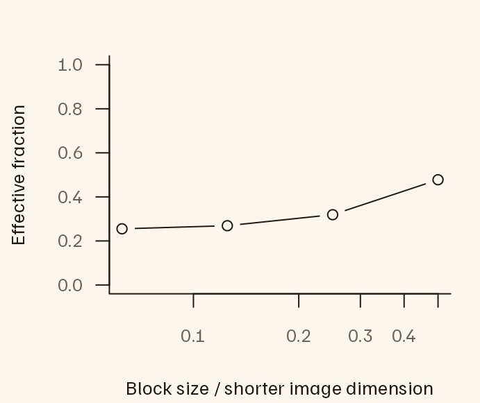

Measuring image structure with saliency maps
Source:vignettes/saliency-entropy.Rmd
saliency-entropy.RmdAn image can contain very different kinds of structure in different places. Think of regular stripes on one side and a patch of visual noise on the other. A measurement of the whole image combines information from both regions. What if you want the measurement to give more importance to one region?
A saliency map supplies a weight for each location in the image. It is often shown as a heat map: brighter locations receive more weight. The values might come from a model that predicts where people will look, or from a region you have chosen to study. Here we will construct a simple map ourselves, so we know exactly which part of the image it emphasizes.
The package uses entropy to summarize how spread out a distribution is. For edge orientations, low entropy means that a few orientations account for most of the edge strength; higher entropy means that strength is spread more evenly across orientations. Regular stripes and visual noise therefore provide a useful first example.
compute_saliency_features() returns three kinds of
measurements:
- First-order edge entropy: how varied are the edge orientations in the regions receiving weight? This pools orientations across locations.
- Pairwise (second-order) edge entropy: how varied are the orientation relationships between edges at particular distances and directions from one another? This also takes their spatial arrangement into account.
- Location entropy: how concentrated is the heat map itself? A small bright spot concentrates weight in a small area; a broadly spread map distributes it over more of the image.
The distinction matters because the same bright spot can fall on either stripes or noise. Moving that spot preserves the map’s concentration but changes which image features receive weight. We will use this idea to interpret the results.
Build an example we can recognize by eye
We will put vertical stripes on the left and random noise on the right, then place the heat map’s bright spot over the stripes. Later, we will flip the map so that it emphasizes the noise. We expect the stripes to have lower first-order edge entropy because their edges occupy fewer orientations.
The code below creates two matrices: img holds the image
values and saliency holds the weights. Each weight belongs
to the pixel at the same position in img.
set.seed(104)
img <- outer(1:72, 1:80, function(x, y) sin(x * .6))
img[37:72, ] <- matrix(rnorm(36 * 80), 36, 80)
saliency <- outer(1:72, 1:80, function(x, y)
exp(-((x - 21)^2 + (y - 45)^2) / 180))

In the figure, brighter colors in the heat map mean that those parts of the image will contribute more to the weighted edge measurements. For your own data, check that the image and map have the same dimensions and orientation, and cover the same area. A bright spot should sit over the feature you intend to emphasize. With imager’s matrix convention, the first dimension runs horizontally. If you supply an image file, supply a map on that file’s original pixel grid; the function will resize them together if needed.
Measure the image with and without the heat map
The function first detects edges in the image, then uses the map to weight their contribution. Start by comparing three rows in its output:
-
observeduses the map we supplied, with its bright spot over the stripes. -
unweightedgives every location the same saliency weight. Stronger image edges still contribute more than weaker ones. -
flip_axis1flips the supplied map horizontally, moving the bright spot onto the noise while leaving the image unchanged.
The function also returns other comparison maps, which we will
explain below. We use smaller filters and distance ranges to suit this
small example. The ranges entries specify inclusive
histogram indices: index 1 represents rounded distance zero, so indices
5 through 20 represent rounded distances 4 through 19 pixels. Keep pixel
scale and viewing geometry consistent when comparing different
images.
settings <- list(filter_length = 9L, gabor_bins = 8L, circ_bins = 16L,
maxdiag = 100L,
ranges = list(c(5L, 20L), c(21L, 40L), c(41L, 70L)))
elapsed <- system.time(
result <- do.call(compute_saliency_features, c(
list(image = img, saliency = saliency, representation = "weights",
centre_match = TRUE, scales = c(1/16, 1/8, 1/4, 1/2)), settings))
)[["elapsed"]]
result$features[
result$features$control %in% c("observed", "unweighted", "flip_axis1"),
c("control", "first_order", "effective_fraction")
]
#> control first_order effective_fraction
#> 1 observed 1.155534 0.2516846
#> 2 unweighted 2.180706 1.0000000
#> 5 flip_axis1 2.942213 0.2516846With the heat map over the stripes, first-order entropy is 1.156 bits. Flipping the map onto the noise raises it to 2.942 bits. The measurement is responding to the part of the image we emphasized, as intended. Because we made this map ourselves, this example tells us about the weighting calculation; it does not tell us where a person would actually look.
The effective_fraction column describes the map’s
concentration on a scale from a single pixel’s fraction of the image up
to 1. A uniform map has a value of 1. Our map has a value of 0.252: it
has the same location entropy as distributing weight equally over
approximately 25% of the image. This is a summary of the whole weight
distribution, rather than an area obtained by drawing a boundary around
the bright spot. Flipping the map preserves this value.
Choose the representation and selection rule
Use representation = "weights" for nonnegative maps and
"log_density" for natural-log density outputs. Log values
can be negative; -Inf means zero mass. The package
exponentiates stably and normalizes the map. Multiplying raw weights by
a positive constant, or adding a constant to log densities, leaves
results unchanged.
raw_location <- saliency_location_entropy(saliency, "weights")
log_location <- saliency_location_entropy(log(saliency) - 1000, "log_density")
stopifnot(isTRUE(all.equal(raw_location, log_location, tolerance = 1e-10)))
raw_location
#> H_location KL_uniform effective_fraction status
#> 1 10.50154 1.990311 0.2516846 okSigned raw maps are rejected by default.
signed_policy = "rectify" replaces negative weights with
zero; "shift" subtracts a negative minimum. Choose and
record a policy appropriate to the model: these choices change its map,
and neither turns arbitrary model scores into calibrated fixation
probabilities. Zero-mass maps return NA with a status, rather than a
uniform fallback.
saliency_location_entropy(matrix(c(-1, 0, 1, 2), 2), "weights",
signed_policy = "rectify")
#> H_location KL_uniform effective_fraction status
#> 1 0.9182958 1.081704 0.4724704 okThe edge filters assign each location a strength, called its
response, and an orientation. First-order entropy uses
all positive responses. Pairwise entropy uses a subset of edges to keep
computation manageable. The default
edge_selection = "image" selects them by response strength,
then uses exactly those edges for every comparison map. This isolates
reweighting. The legacy selection threshold retains the strongest 10,000
responses on larger images, including cutoff ties; below 10,000 pixels
it uses the strongest 10% instead. It is not an exact cap when responses
tie.
edge_selection = "saliency" selects by response times
saliency, so low-contrast salient edges can enter. It measures the
combined effect of selection and weighting and may require separate
counting passes for different controls.
sensitivity <- do.call(compute_saliency_features, c(
list(image = img, saliency = saliency, representation = "weights",
edge_selection = "saliency", pair_weighting = "reference",
transform_controls = FALSE), settings))
selected <- sensitivity$selection[c("observed", "unweighted")]
data.frame(control = names(selected),
selected_edges = vapply(selected, nrow, integer(1)))
#> control selected_edges
#> observed observed 576
#> unweighted unweighted 595The default pair_weighting = "both" weights both
endpoints of each ordered pair. "reference" weights only
the reference endpoint: it asks about structure around salient reference
edges, including nonsalient endpoints. Neither mode filters a
saliency-multiplied image.
Compare the original map with alternatives
To understand a weighted result, keep the image fixed and change the map. These alternative maps are controls: they help you ask what accounts for a difference in entropy. Alongside the unweighted image, the function provides:
-
A centre map, labelled
centre_bias, which puts more weight near the middle of the image regardless of its content. -
Flipped or rotated versions of the supplied map,
which preserve its weight values but move them relative to image
features. The earlier
flip_axis1comparison is one example. - Maps borrowed from other images, when you supply them. The API calls each borrowed map a donor map. This lets you compare the image’s own saliency map with maps associated with other images, without breaking those maps into randomly shuffled pixels.
Weighting changes the descriptor. It can increase or decrease entropy: a concentrated map may emphasize regular structure, diverse structure, or weak edges that counterbalance already uneven response strengths. The unweighted contrast describes the overall effect of weighting. Exact map transforms preserve the saliency value distribution and help examine alignment with this particular image. Their overlap with image edges and their pair support can still change.
Here, alignment means where the map’s high weights fall relative to image features. In our example, the bright spot’s alignment with stripes rather than noise explains why moving it changes first-order entropy.
The following values were supplied in the feature review. They are an illustration for interpreting contrasts, not measurements from the synthetic image above or a benchmark of the revised implementation.
| control | effective_fraction | 20-80 | 80-160 | 160-240 |
|---|---|---|---|---|
| unweighted | 1.00 | 4.489 | 4.443 | 4.399 |
| centre_bias | 0.78 | 4.459 | 4.370 | 4.375 |
| flip_axis1 | 0.34 | 4.414 | 4.262 | 4.234 |
| observed | 0.34 | 4.292 | 4.239 | 4.247 |
| 20-80 | 80-160 | 160-240 | |
|---|---|---|---|
| Observed minus unweighted | -0.197 | -0.204 | -0.152 |
| Observed minus flipped | -0.122 | -0.023 | 0.013 |
All three observed-minus-unweighted values are negative. Against the flipped map, the additional reduction is mainly short-range; the long-range difference is slightly positive. This one example does not establish a general effect. Moreover, those raw summaries may average different combinations of distances and directions. Each such combination is called a cell. A cell is left out if it has too little weighted edge-pair support under the chosen validity rule.
To compare the same cells, we can restrict both maps’ calculations to the cells that are available for both. This is called common support. The output includes this comparison alongside the original difference:
result$ranges[result$ranges$control == "flip_axis1",
c("start", "end", "observed_minus_control", "observed_minus_control_common",
"common_valid_cell_coverage", "common_status")]
#> start end observed_minus_control observed_minus_control_common
#> 13 5 20 0.01714162 0.01714162
#> 14 21 40 0.20877953 0.20877953
#> 15 41 70 0.17956417 0.20440138
#> common_valid_cell_coverage common_status
#> 13 0.8007812 ok
#> 14 0.7343750 ok
#> 15 0.2750000 okobserved_minus_control_common intersects the two maps’
valid cells before averaging. Both maps use equal weight for shared
directions at each distance, then equal weight for retained distances.
common_valid_cell_coverage records how much of the range
survived this intersection.
The signs of first-order and pairwise contrasts differ in this constructed example. These measures describe different distributions: marginal orientations versus relative orientations conditional on distance and direction. There is no requirement that weighting move them together.
The output also summarizes controls in two groups, called
families: flipped or rotated maps
(transformed), and maps from other images
(donor). Within each group, it keeps cells available for
the observed map and all usable distinct comparison
maps. This is more restrictive than comparing two maps at a
time. A transformation that leaves the map unchanged is excluded, and
repeated copies of the same map receive no extra votes. The mean and SD
describe the control values; the SD is not a standard error or a
permutation-test uncertainty estimate.
result$comparisons[, c("family", "metric", "range_id", "observed_minus_control_mean",
"n_controls", "common_valid_cell_coverage", "status")]
#> family metric range_id observed_minus_control_mean n_controls
#> 1 transformed first_order NA -1.20753631 3
#> 2 transformed pairwise 1 0.01142794 3
#> 3 transformed pairwise 2 0.13921054 3
#> 4 transformed pairwise 3 0.13665808 3
#> 5 donor first_order NA NA 0
#> 6 donor pairwise 1 NA 0
#> 7 donor pairwise 2 NA 0
#> 8 donor pairwise 3 NA 0
#> common_valid_cell_coverage status
#> 1 NA ok
#> 2 0.8007812 ok
#> 3 0.7343750 ok
#> 4 0.2750000 ok
#> 5 NA no_distinct_controls
#> 6 NA no_distinct_controls
#> 7 NA no_distinct_controls
#> 8 NA no_distinct_controlsThe observed rows of features and ranges
also contain observed_minus_transform_mean and
observed_minus_donor_mean. The pairwise versions always use
the family-wide common support. Other control rows have NA in these
columns. Because we have not yet supplied maps from other images, that
group’s summary is unavailable. We add them in the next section.
The fixed centre_bias map uses
centre_sigma = .25. With centre_match = TRUE,
a second map, centre_bias_matched, fits an isotropic
Gaussian in normalized image coordinates to the observed effective
fraction. Matching this one entropy value does not match shape,
multimodality, edge overlap or pair support. The fit can be unattainable
on a discrete grid, for example a one-pixel point mass versus a centred
Gaussian on an even-by-even grid. Inspect the fit status and achieved
fraction rather than assuming success.
result$metadata$controls$centre_bias_matched
#> $source
#> [1] "effective-fraction-matched centred Gaussian"
#>
#> $sigma_image_fraction
#> [1] 0.1214382 0.1214382
#>
#> $target_effective_fraction
#> [1] 0.2516846
#>
#> $achieved_effective_fraction
#> [1] 0.2516846
#>
#> $minimum_effective_fraction
#> [1] 0.0006944444
#>
#> $fit_status
#> [1] "ok"Add comparison maps from other images
For a collection of images, you can ask whether each image’s own
saliency map produces a different result from maps associated with the
other images. First, choose which images are suitable comparisons: they
should have compatible aspect ratios and maps produced by the same model
and preprocessing steps. saliency_donor_assignments() then
chooses which other image’s map to use for each target image.
The strata argument expresses these matching groups:
only images with the same group label can exchange maps. This does not
automatically match map concentration. Add concentration to your
grouping rule if your study requires it, and inspect the effective
fractions after any resizing. A borrowed map retains its own pattern of
weights, which may be more or less concentrated than the target image’s
map.
Here we create synthetic stand-ins for two other images’ maps. We
label all three images as belonging to the same matching group and
request two sets of assignments with replicates = 2L.
other_maps <- list(
other_a = outer(1:72, 1:80, function(x, y) exp(-((x-55)^2+(y-30)^2)/180)),
other_b = outer(1:72, 1:80, function(x, y) exp(-((x-40)^2+(y-65)^2)/350))
)
assignments <- saliency_donor_assignments(
c("scene", "other_a", "other_b"), rep("same-grid-model-processing", 3),
replicates = 2L, seed = 7L
)
with_other_maps <- do.call(compute_saliency_features, c(
list(image = img, saliency = saliency, representation = "weights",
image_id = "scene", donor_maps = other_maps, donor_assignments = assignments),
settings))
with_other_maps$comparisons[with_other_maps$comparisons$family == "donor",
c("metric", "range_id", "n_requested", "n_controls", "controls_used",
"observed_minus_control_mean", "status")]
#> metric range_id n_requested n_controls controls_used
#> 5 first_order NA 2 1 donor_1
#> 6 pairwise 1 2 1 donor_1
#> 7 pairwise 2 2 1 donor_1
#> 8 pairwise 3 2 1 donor_1
#> observed_minus_control_mean status
#> 5 -1.197543536 ok
#> 6 0.004883084 ok
#> 7 0.032150841 ok
#> 8 0.037126086 okAssignments exclude the same stimulus, including alternate versions
identified with stimulus_ids. Random-number state is
restored. Randomized matching does not sample all admissible
permutations uniformly, so these are descriptive controls, not
calibrated permutation p-values.
Keep these summaries separate from those for flipped or rotated maps.
Combining them into one mean would make the result depend on how many
assignments from other images you requested. The output reports
n_requested and n_controls separately because
repeated assignments can reuse a map; each distinct map receives one
vote in the summary.
Inspect support and resizing
result$ranges[result$ranges$control == "observed",
c("start", "end", "entropy", "mass_fraction", "effective_pairs_ratio",
"valid_cell_coverage", "status")]
#> start end entropy mass_fraction effective_pairs_ratio valid_cell_coverage
#> 1 5 20 0.04793208 0.713984103 0.3009317 0.8007812
#> 2 21 40 0.62159347 0.232886490 0.2760750 0.7343750
#> 3 41 70 0.89022701 0.004215989 0.2430160 0.3458333
#> status
#> 1 ok
#> 2 ok
#> 3 okeffective_pairs_ratio compares Kish effective counts
with the unweighted counts on the same selected edges.
A value of 0.22 describes a reduction in weight spread relative to that
baseline, not retention of 22% of independent observations. Pairs share
endpoints. Effective count is not an upper bound on categorical entropy
and is not an automatic bias correction.
Low valid_cell_coverage means the summary represents
only part of its nominal range. Inspect
result$cells$observed to find which cells are missing or
have concentrated weights. Compact hotspots can leave long ranges
unavailable even when some positive mass reaches those distances. NA is
distinct from a valid entropy of zero. validity = "support"
requires explicit min_cell_mass_fraction and
min_effective_pairs; these replace the legacy mass cutoff.
min_common_coverage can additionally reject comparisons
with too little shared coverage. Its default zero requires at least one
shared cell and does not certify adequate support for a scientific
interpretation.
Both backends of this new API use Euclidean geometry and the native
legacy validity rule. The historical R conventions remain in
compute_edge_entropy(use_cpp = FALSE). Uniform saliency
retains native legacy results; ordinary numerical tolerance applies to
comparisons between backends.
Map downsampling uses area averaging, upsampling uses linear
interpolation, and mass is renormalized afterward. These operations can
change concentration. Metadata for the supplied map and maps from other
images record location metrics before and after resizing. For maps from
other images, the default aspect-ratio tolerance is 1%, intended for
small grid-rounding differences, not for accepting a different field of
view. Keep smoothing and viewing geometry consistent across images;
record model and smoothing details with provenance. No
additional smoothing is applied here.
Examine spatial organization at several scales
curve <- result$multiscale$observed$summary
plot(curve$scale, curve$effective_fraction, type = "b", log = "x",
xlab = "Block size / shorter image dimension",
ylab = "Effective fraction", ylim = c(0, 1))
The curve aggregates probability into blocks at several shifted grid
origins. Boundary blocks use their actual areas in the uniform
reference. Inspect result$multiscale$observed$curve for
individual origins. This is multiscale location entropy, not
second-order entropy; it describes clustering without uniquely
identifying the number or arrangement of hotspots. Use degrees of visual
angle with scale_units = "degrees" and
pixels_per_degree when that calibration is available.
Arbitrary resampling and smoothing are not invariances.
Plan runtime
The main example above took 0.581 seconds in this build. It uses a 72-by-80 image and reduced filters and bins, so this is not a prediction for full-size stimuli. Pairwise work grows quadratically with the number of selected edges and roughly linearly with the number of controls after sharing geometry. Default image selection shares one geometry pass and one unweighted baseline across controls. Saliency-based selection may require separate passes, and ties can increase the selected edge count above 10,000.
Use pairwise = FALSE for first-order and map descriptors
alone. Benchmark a representative image with system.time()
before processing a corpus; record image dimensions, selected edge
counts, controls, bins and backend. The R backend provides a slower
reference implementation. Neither a smoke test nor this small runnable
example establishes production throughput.